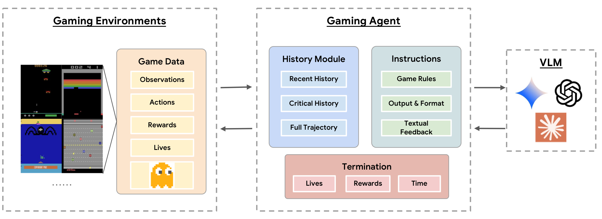
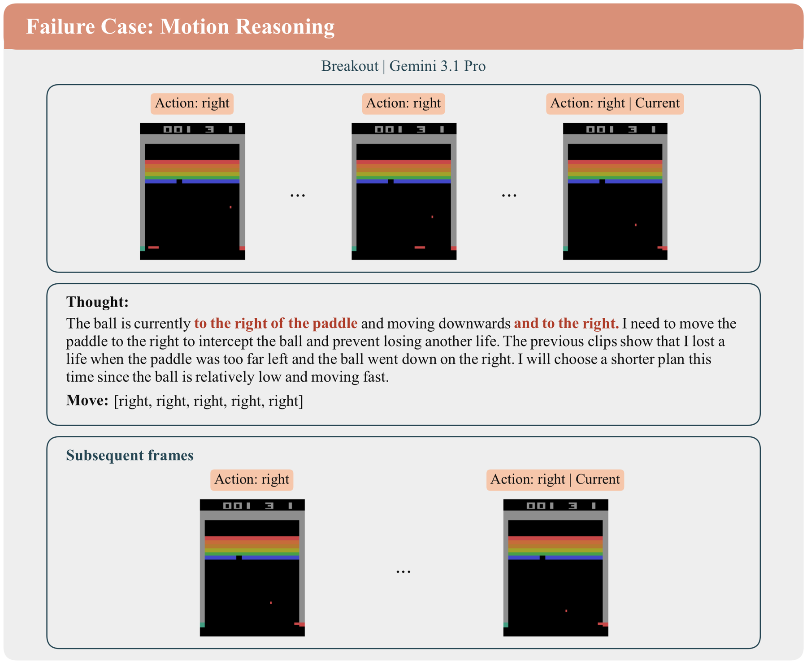
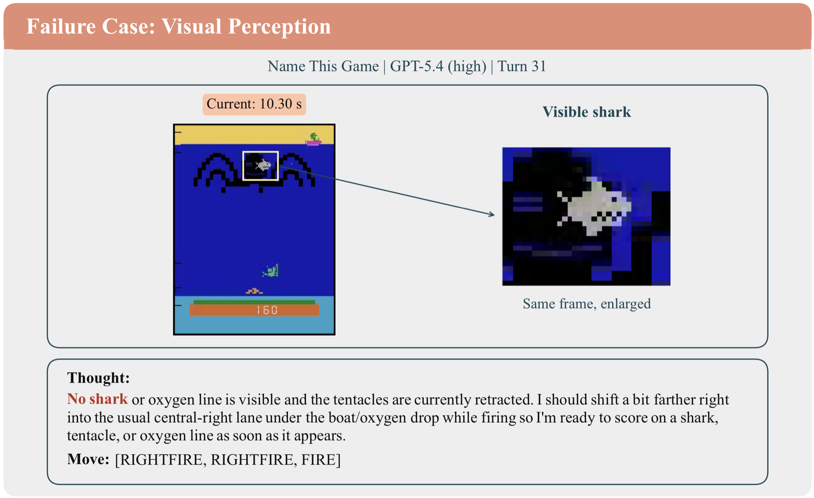
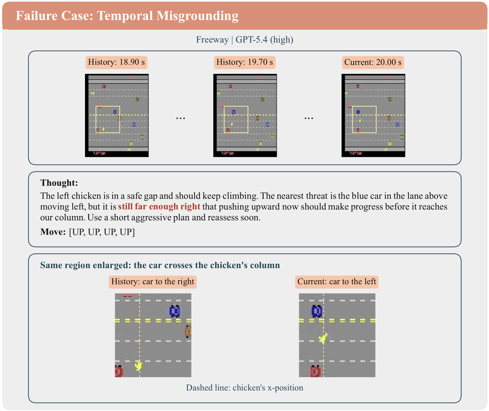
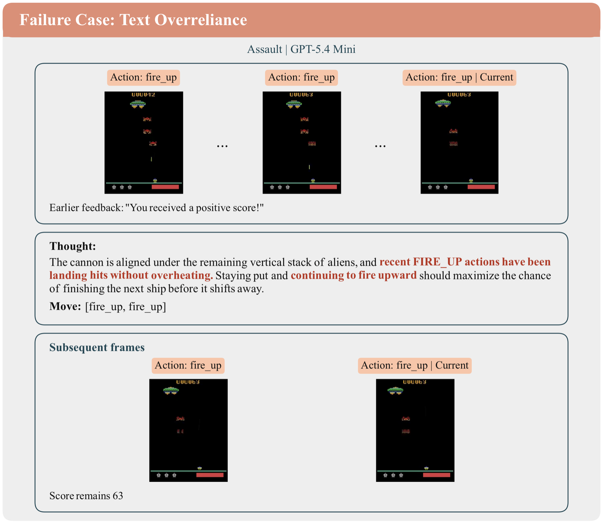
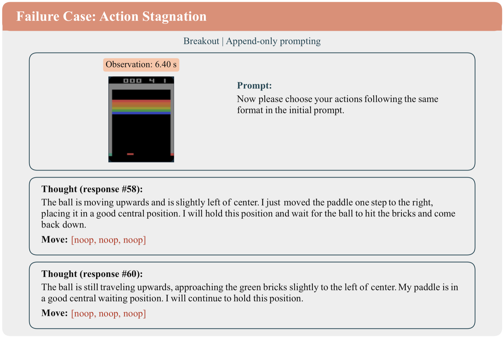

NeurIPS 2026 · Evaluations and Datasets Track
Vision-Language Models (VLMs) have achieved strong performance on static visual understanding benchmarks, yet their ability to act in dynamic environments remains poorly understood. We introduce AtariBench, a controlled benchmark that evaluates VLMs across 20 Atari 2600 games, requiring models to make sequential decisions from high-temporal-resolution gameplay streams. By decoupling fast in-game dynamics from wall-clock inference speed, AtariBench focuses on whether models can perceive rapid visual state changes, reason over spatiotemporal dynamics, and ground actions in the current observation. Our experiments reveal substantial limitations in state-of-the-art VLMs: models often fail to infer object motion and direction, exhibit brittle sequential decision-making, and over-rely on textual interaction history despite newly appended visual feedback. We further introduce a separability analysis to identify which in-game scores provide reliable signals of model competence, and use the benchmark to study how memory design and prompting strategies affect performance. Overall, AtariBench exposes a persistent gap between passive visual perception and active decision-making, providing a lightweight and rigorous testbed for developing VLMs that can reason and act in dynamic environments.
On each turn, the model receives game-specific instructions, a structured history (or an append-only context) of recent frames, and the current frame. It replies with a short thought and a chunk of joystick actions, which the emulator executes before the next turn. Because the game only advances when actions are executed, fast in-game dynamics are decoupled from wall-clock inference speed.

- model settings ranked across 20 games. VLMs use structured history unless tagged AO (append-only).
AtariBench tests three capabilities:
Models miss cues that are obvious to humans. The cases below, from the paper's failure analysis, show the model's thought next to the frames it saw.





noop despite updated frames and feedback. We observe this in Gemini 2.5
Flash, Gemini 2.5 Pro, and Gemini 3 Flash, but not in Gemini 3.1 Pro.
Swipe, use the arrows, or pick a case above
Atari 2600 games are the property of their respective copyright holders. Gameplay clips are shown for research illustration only.
The code is released as a single Colab notebook that contains the full AtariBench harness: the 20 game prompts, the prompt builder, the response parser, the gameplay loop, and a Gemini client.
GEMINI_API_KEY field.Model outputs are stochastic, so expect agreement within the standard error rather than exact matches. Other models can be evaluated by plugging a different model client into the same harness.
@inproceedings{huo2026ataribench,
title = {Evaluating Spatiotemporal Reasoning of Vision-Language Models in Atari Gameplay},
author = {Huo, Mingjia and Fu, Yao and Chang, Bo and Wang, Yaqing and Zhu, Dawei and Zhang, Dylan and Yi, Xinyang and Hong, Lichan and Chi, Ed H. and Zhang, Hao and Tang, Jiaxi},
booktitle = {Advances in Neural Information Processing Systems},
year = {2026}
}